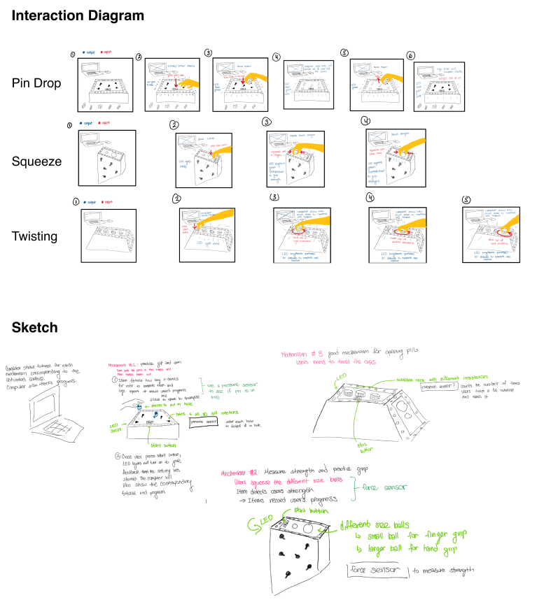
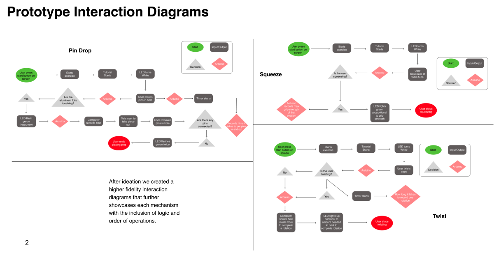
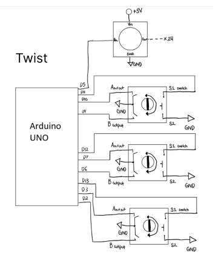
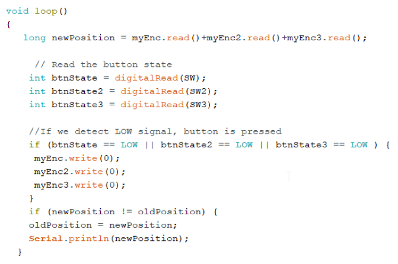
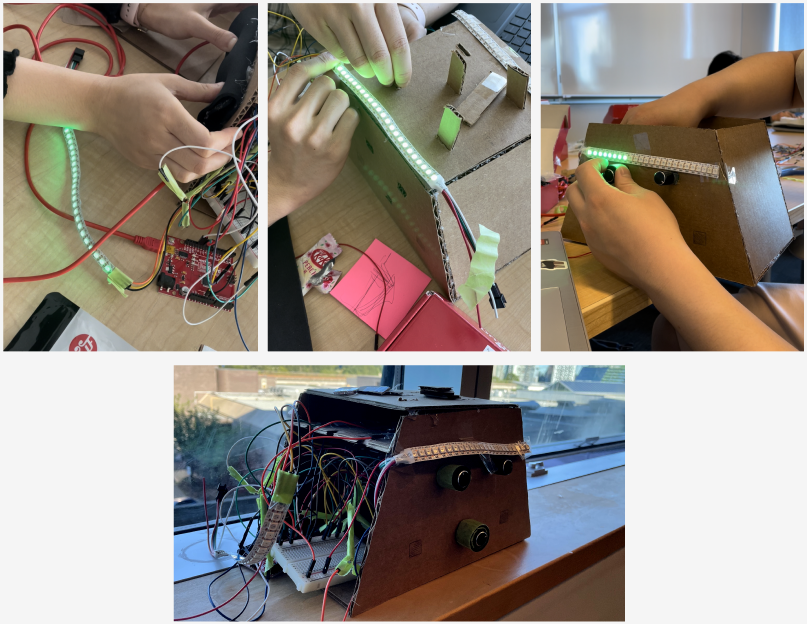
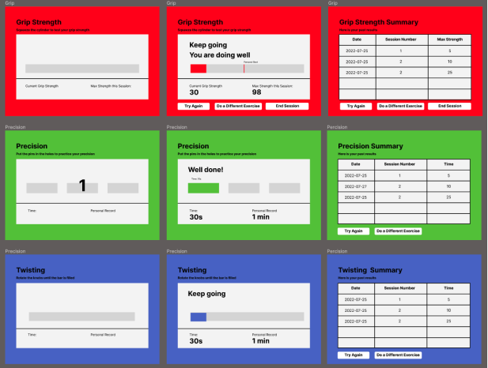

May 2022 - Aug 2022
We created an educational device designed for fine motor skills rehabilitaion for the elderly.
JY Lee, Michael Su, Grace Tan, Russell Yuen
I was the main Arduino programmer and engineer responsible for sensor inputs and wiring.
Sketching, Prototyping, Electrical wiring, Physical model building
Figma, Arduino, Processing
Our solution was to create a device that the elderly could use at home without assistance of a trained professional. We designed a device using Arduino sensors for user input, and then a user interface designed in Processing to provide feedback and record daily progress.
The process of getting to this idea was during a brainstorming session where one of the members mentioned their mother suffered from arthritis. After looking at various devices that help with fine motor skills on YouTube, we decided to combine these devices as their purpose of improving the patients functions were similar.
After evaluating the most common fine motor skill exercises we decides on three mechanisms: a pin drop to test user finger accuracy, a squeeze ball for grip strength, and twisting a knob to judge wrist flexibility.
We created diagrams based on how the user would interact with our device and the computer, and how it would record their daily exercise.
I created diagrams and coded the sensors to test the wiring and program before implementing the Arduino and breadboard into the prototype. For the Squeezing mechanism, pin drop, and twisting knobs.
  
After consideration from the TA and classmates, we realized we had too
many unnecessary designs in our implementation. For our revision we
decided to simplify it from a 3 sided design into a 1 sided design.
Our problem was that we had too many knobs, pins, and separate LED
strips in our design. We simplified it to use 1 LED strip for all 3
functions and have a single rotary encoder with different sized knobs.
Some other improvements we made to our iterations was the use of
coloured foamboard to aid the use of visual feedback, copper tape
instead of aluminum foil for durability, sound effects for auditory
feedback
We also implemented a Processing user interface that could give visual cues on the amount of progress in an exercise and track daily progress.
I learned a lot from this project since it was both a digital and physical project, I think one of the biggest problems I had was that it was very annoying working with three different sensors at the same time on Arduino and then sending the client data into the Processing server. Initially we had different roles and I did Arduino coding, while my group member Grace did Processing code, we were really good at communicating with each other, but as we had to do more debugging, more problems rose up. Another big problem I had was with wiring because everything was behind a cramped tight box. What I would do different is maybe consider doing one sensor at a time and then implementing it into Processing instead of doing all three sensors at once. Another thing I would do differently is have longer wire connection so I could do the wiring outside without disconnecting some interior wiring.